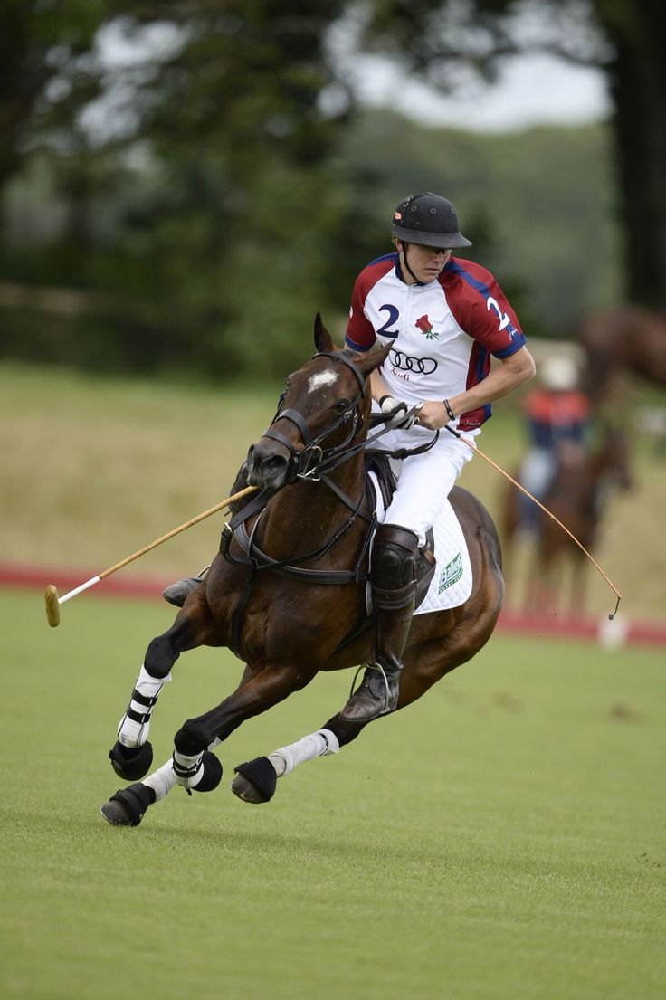
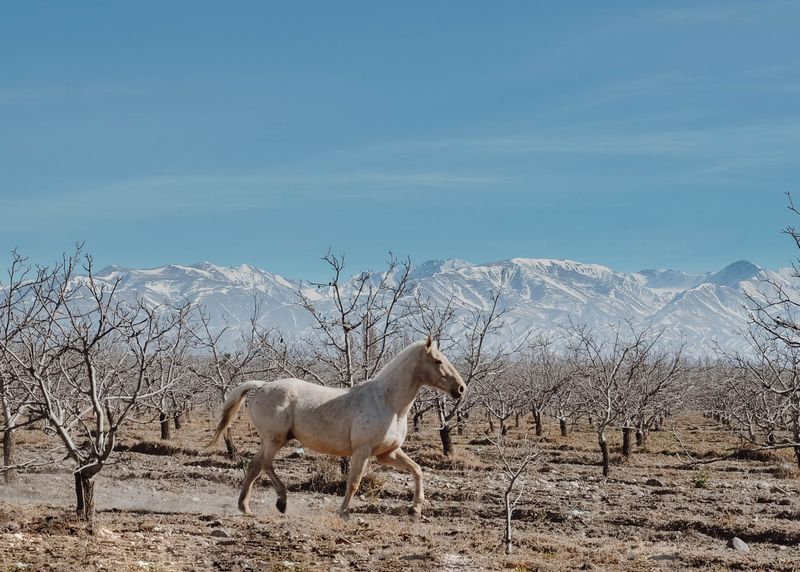

Why Catch & Release of Rainbow Trout in Patagonia is Good for the Environment
Practicing catch and release in Patagonia's pristine rivers helps maintain the delicate balance of aquatic ecosystems. By returning rainbow trout to their natural habitat, we ensure future generations can enjoy this unique experience while supporting local conservation efforts.
“The thrill of the catch is only matched by the satisfaction of seeing the trout swim away strong.”
- John M., Guest 2023
Source: Patagonia Conservation Journal, 2022

The Art of Polo: Professional Care and Respect for Horses
At The Condor Club, our polo horses receive world-class care, from daily grooming and balanced nutrition to regular veterinary checkups. Our philosophy is rooted in respect, ensuring every horse is treated as a true athlete and companion.
“Our horses are family. Their well-being is our top priority.”
- María G., Polo Trainer
Source: Polo & Equestrian Review, 2023

Integrating Indigenous Tribes: The Heart of the Amazonian Experience
Our Amazonian Genesis journey is enriched by the wisdom and traditions of local indigenous tribes. Guests participate in authentic rituals, learn about sustainable living, and support community projects that preserve the Amazon's cultural heritage.
“Sharing our traditions with guests helps keep our culture alive.”
- Chief Tupa, Yawanawa Tribe
Source: Amazonia Heritage Magazine, 2023

12 Years Sailing the Mediterranean: A Family's Grand Adventure
The Rossi family has spent over a decade exploring the Mediterranean's hidden gems. Their story is one of discovery, connection, and the joy of life at sea—an inspiration for all who dream of adventure.
“Every port is a new chapter in our family's story.”
- Luca Rossi
Source: Mediterranean Explorer, 2024

Cabalgatas de Lujo en la Patagonia
Descubre la experiencia de recorrer la estepa patagónica a caballo, guiado por expertos gauchos y rodeado de paisajes inigualables.
“Una travesía inolvidable, la conexión con la naturaleza y el lujo en cada detalle.”
- Lucía F., Argentina
Publicado el 12/05/2024
Yachting Mediterráneo: El Nuevo Lujo
Navegar por el Mediterráneo en un yate privado es la máxima expresión de exclusividad. Chef a bordo, calas secretas y atardeceres dorados.
“El servicio y la privacidad superaron todas mis expectativas.”
- Jean-Paul M., Francia
Publicado el 28/04/2024
Amazonas: Aventura y Confort
Explora la selva amazónica con guías privados, alojamientos boutique y experiencias únicas de avistaje de fauna.
“Ver un jaguar en libertad y luego cenar gourmet en la selva fue surrealista.”
- Camila R., Brasil
Publicado el 10/04/2024
Polo Argentino: Tradición y Excelencia
Vive la emoción del polo en estancias exclusivas, con caballos premiados y jugadores de élite.
“Aprendí a jugar polo con los mejores y disfruté de una hospitalidad sin igual.”
- Thomas S., UK
Publicado el 22/03/2024
Membresía: El Pasaporte a lo Inalcanzable
Ser miembro de The Condor Club es acceder a un mundo de privilegios, eventos privados y experiencias a medida.
“La membresía me abrió puertas a aventuras que jamás imaginé.”
- Valeria D., Uruguay
Publicado el 05/03/2024

Fly Fishing en Mendoza: Lujo y Naturaleza
Disfruta de la pesca con mosca en ríos cristalinos, rodeado de montañas y con servicios premium.
“Pescar en Mendoza fue una experiencia de paz y adrenalina a la vez.”
- Diego M., Chile
Publicado el 18/02/2024